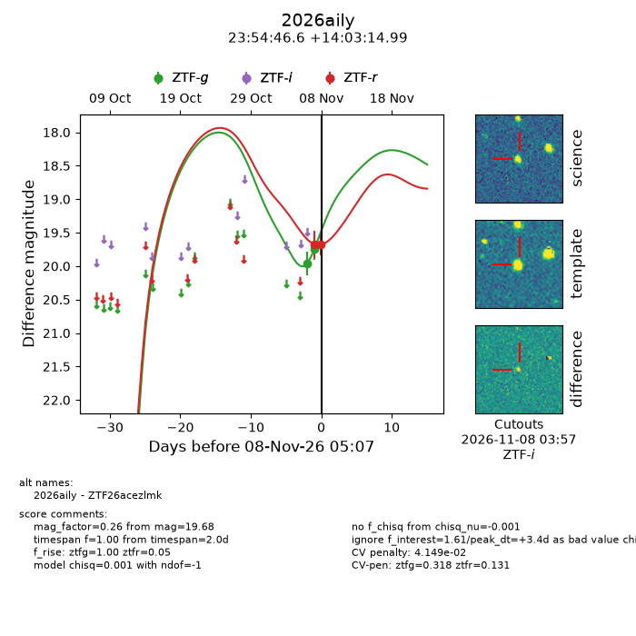
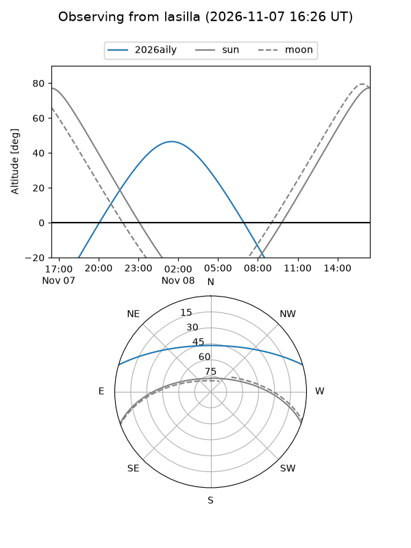
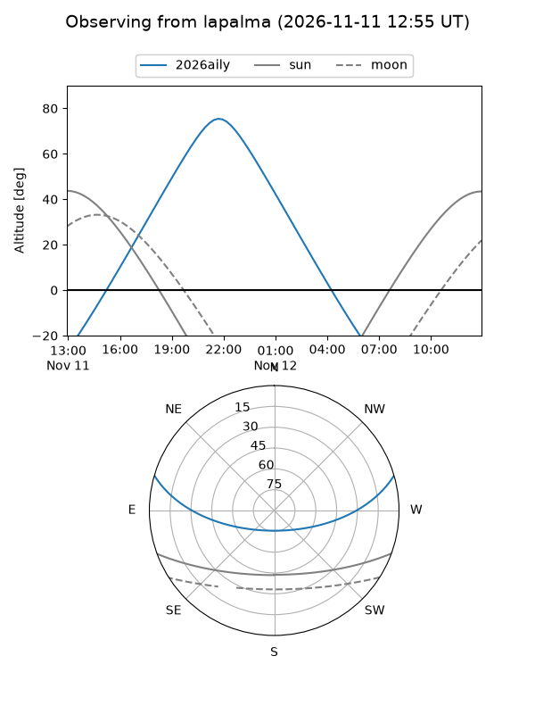
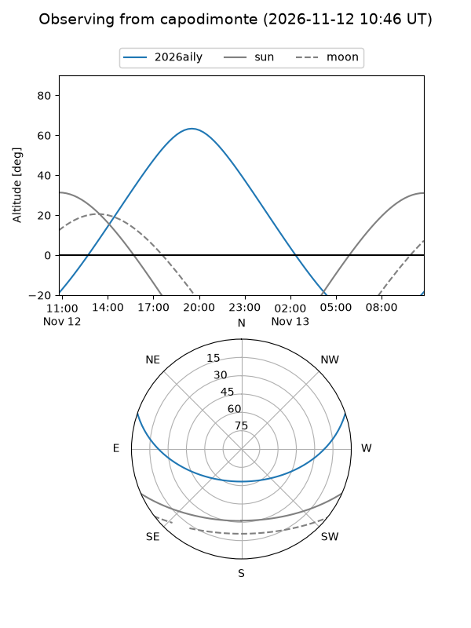
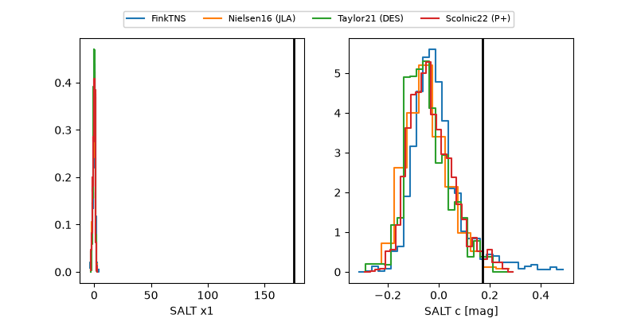

2026aily
Target 2026aily at 2026-11-08 05:09
Aliases and brokers:
FINK-ZTF: ztf.fink-portal.org/ZTF26acezlmk
Lasair-ZTF: lasair-ztf.lsst.ac.uk/objects/ZTF26acezlmk
ALeRCE-ZTF: alerce.online/object/ZTF26acezlmk
YSE-PZ: ziggy.ucolick.org/yse/transient_detail/2026aily
TNS name: wis-tns.org/object/2026aily
Direct TNS query: direct search
alt names
ZTF26acezlmk (ztf,fink_ztf)
2026aily (tns,yse)
Coordinates:
equatorial (ra, dec) = 358.6943,+14.05416
equatorial (HMS+DMS) = 23:54:46.64,+14:03:14.99
galactic (l, b) = (102.7260,-46.58264)
Flags:
likely cv: !!
CV pen: 0.041490116869026344
peak dt: +3.4
Photometry:
last ztfg=19.74, ztfr=19.68
2 ztfg, 2 ztfr detections
Lightcurve

Visibility



Additional plots
